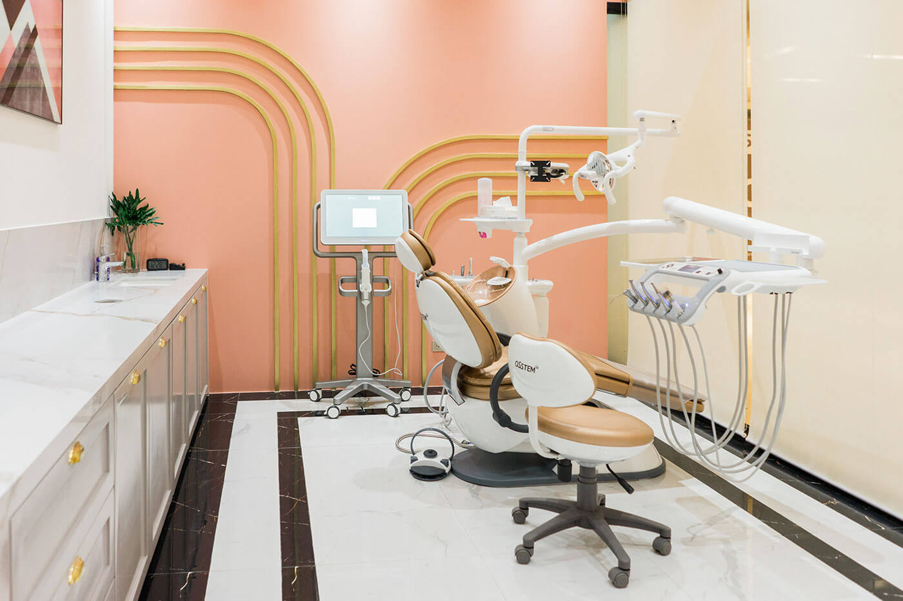

Discipline 01
Hub
General dentistry
Check-ups, oral prophylaxis, fillings and preventive care.

Grand Central Park, Taguig City
Our flagship clinic is on the second floor of Mitsukoshi BGC.
It opens seven days a week and closes at 20:00 every day, which makes it the clinic to book when the only hour you have is after work. 3D CBCT imaging is installed here, so a case that needs a three-dimensional scan is scanned in the same building where it is planned and treated.
This is a specialist clinic, not a general branch with a visiting dentist. Our specialists work by discipline, and complex work is planned inside the group rather than sent elsewhere.
Stage 01 of 08. This page runs as a route, in the order you will actually use it: where the clinic is, how to get up to it, when it opens, who works there, what is installed there, what you can book there, and what to know before you take a slot.
Both weekend days included at this branch.
Weekends open half an hour earlier than weekdays.
Reached from inside the mall, with no separate street entrance.
Six stages, in the order you will use them. Every one of them ends by naming the next, so you can read straight through or jump to the question you came with.
Stage 02 of 08. If you already know where you are going, the block beside this one has the address, the week and the number in one place.
Mitsukoshi BGC
Second floor of the mall, Taguig City. The full postal address, the route up from mall level and the parking are set out in stage 03.
2F Mitsukoshi BGC, 8th Avenue corner 36th Street, Grand Central Park, Taguig City.
Mitsukoshi BGC sits on the Grand Central Park block, on the corner of 8th Avenue and 36th Street. The clinic is on the second floor. Take any escalator or lift to level two and follow the mall directory to Elevate Dental.
Stage 03 of 08. You have the block and the floor. The next question is which hour to come.

This clinic is open all seven days. Weekends open half an hour earlier than weekdays, and every day closes at 20:00.
| Day | Opens | Closes |
|---|---|---|
| Monday | 11:00 | 20:00 |
| Tuesday | 11:00 | 20:00 |
| Wednesday | 11:00 | 20:00 |
| Thursday | 11:00 | 20:00 |
| Friday | 11:00 | 20:00 |
| Saturday | 10:30 | 20:00 |
| Sunday | 10:30 | 20:00 |
+63 917 159 9284
Call the number above to reach this clinic. Use email if your question is not time-sensitive or if you want to send documents ahead of a first visit.
Holiday hours can differ from the schedule above. Please call the clinic to check before visiting on a public holiday.
The last appointment of the day
The last appointment of the day is set by treatment length, so a longer procedure needs an earlier slot. If you are booking something that runs an hour or more, say so when you call and the front desk will place it where it fits.
Stage 04 of 08. You have the week and the number. The next two stages are about what you will find when you get here.
Elevate Dental is a group of specialists. Our specialists work by discipline, which means an orthodontic case is planned by an orthodontist, a root canal is performed by an endodontist, and a crown or bridge is designed by a prosthodontist.
You are not passed to a generalist who then refers you out to a stranger across the city.
That is the practical value of a specialist bench. A case that touches two disciplines, an implant that needs surgical placement and then a prosthetic restoration, is discussed between the two people who will do the work.
The full roster, with each specialist's discipline, is published on the specialists page.

Stage 05 of 08. The bench is one half of what a complex case needs here. The imaging is the other half.
3D CBCT imaging is installed at this clinic. CBCT is available at all four of our clinics, so the scan your case needs is taken where you are seen.
A CBCT scan shows bone volume, nerve position and root anatomy in three dimensions, which is what implant placement, impacted extractions and difficult root canals are planned against.
3D CBCT imaging
Bone volume, nerve position and root anatomy in three dimensions, taken in the same building where the case is planned.
Installed at all four clinicsiTero intraoral scanner
Digital scanning of the teeth in place of putty impressions. Worked with across the group.
RayFace facial scanner
Facial scanning, used where a plan has to account for the face and not only the teeth. Worked with across the group.
OccluSense bite analysis
Measurement of how the teeth meet under load, rather than an impression of how they sit at rest. Worked with across the group.
Sol Dental Laser
Laser instrumentation, used in soft-tissue work. Worked with across the group.
AirFlow (guided biofilm therapy)
Guided biofilm therapy, the cleaning protocol that removes the film before the deposit. Worked with across the group.
Zoom whitening
In-clinic whitening, carried out under supervision. Worked with across the group.
Piezotome
Ultrasonic instrumentation, used in surgical work. Worked with across the group.

Stage 06 of 08. Next, what you can actually book at this address.
Our specialists practice across these disciplines, each with its own hub. If you are not sure which discipline your case belongs to, book a consultation and let the assessment decide. That is what the first visit is for.
General dentistry
Check-ups, oral prophylaxis, fillings and preventive care.
Cosmetic dentistry
Porcelain and composite veneers, whitening and smile design.
Orthodontics
Braces and Invisalign (Clear Aligners).
Endodontics
Root canal treatment and retreatment.
Periodontics
Gum disease, scaling and root planing, gum contouring.
Prosthodontics
Crowns, bridges, complete dentures and removable partials.
Oral surgery
Surgical extractions, dental implants and bone procedures.
Pediatric dentistry
Check-ups, sealants and fluoride treatment for children.
Dental X-rays
Digital radiography, plus the imaging covered at stage 06.
This page links to each practice the group delivers; it does not state which of them run at this address, or on which days.
Stage 07 of 08. One stage left, and it is the one worth reading before you pick a date.
Two things are worth knowing before you take a slot at this clinic, and both are stated here rather than discovered later.
How payment works
Elevate Dental does not accept HMO or dental insurance. All treatment is self-pay. HMO coverage cannot be used for dental treatments at our clinics.
Your treatment plan is quoted after clinical assessment, so you know the figure before anything begins. Published treatment prices for the group are on the prices page.
Patients treated here
Patients have published written accounts of their treatment with us, and some of those accounts name the clinic they were treated at. None of them appears on this page yet, and the reason is stated beside this paragraph rather than left as a gap.

Stage 08 of 08. Book at Mitsukoshi BGC, or call the clinic directly on +63 917 159 9284 and speak to the front desk about which day suits your case.